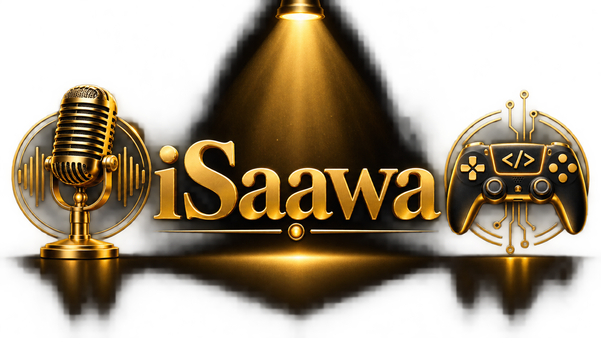

Ny musik
Vi fortsätter att skapa och publicera musik under iSaawa. Lyssna på våra aktuella låtar via Suno.

MUSIK • IT • SPELUTVECKLING
Två kreativa spår, skapade av en far och son. Musik, IT, spelutveckling och kodprojekt förenas under iSaawa.
Vi fortsätter att skapa och publicera musik under iSaawa. Lyssna på våra aktuella låtar via Suno.
Vårt spelförbättringsverktyg utvecklas vidare och förbereds för testning av vår internationella testgrupp.
Vi är Niclas och Casper – en pappa i 40-årsåldern och hans son i 12-årsåldern. Tillsammans driver vi iSaawa, där musik möter IT, kodning och spelutveckling. Niclas skapar musiken, och tillsammans utvecklar vi digitala idéer och projekt. Det som började som gemensamma intressen har blivit en kreativ satsning där vi lär oss, bygger och skapar sida vid sida.
Instagram, YouTube och TikTok är under uppbyggnad och kommer snart att uppdateras.